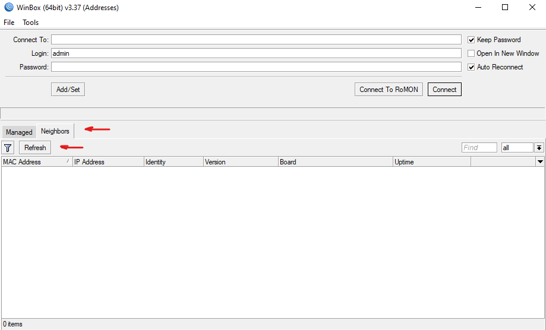
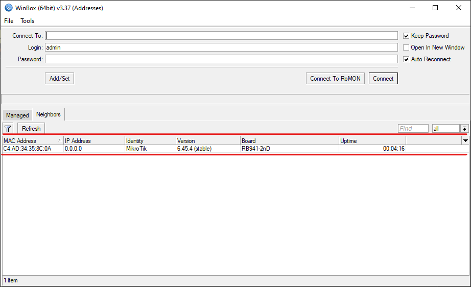
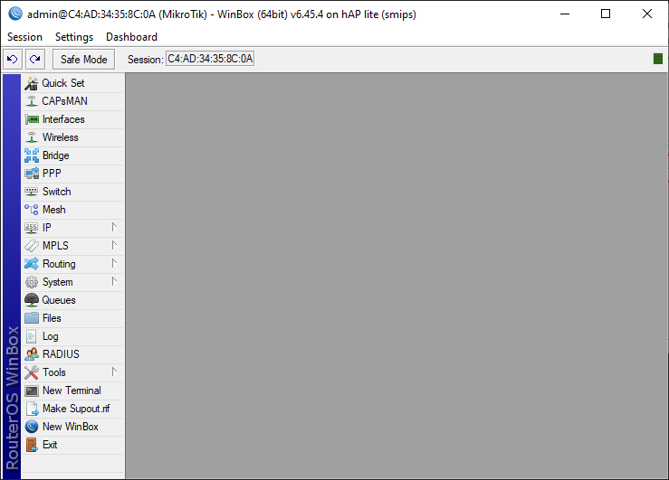
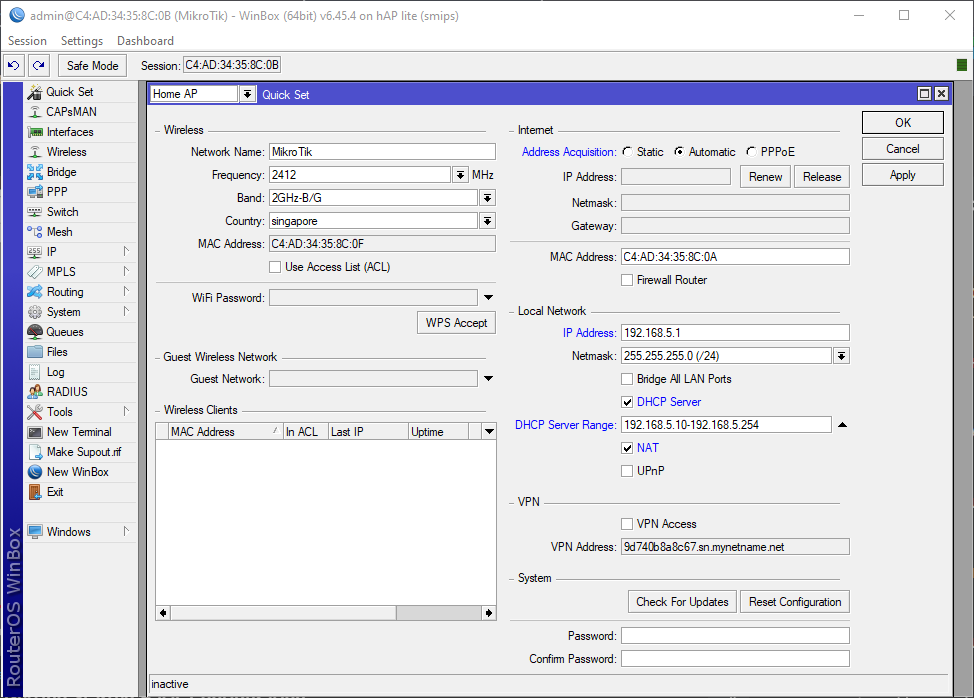
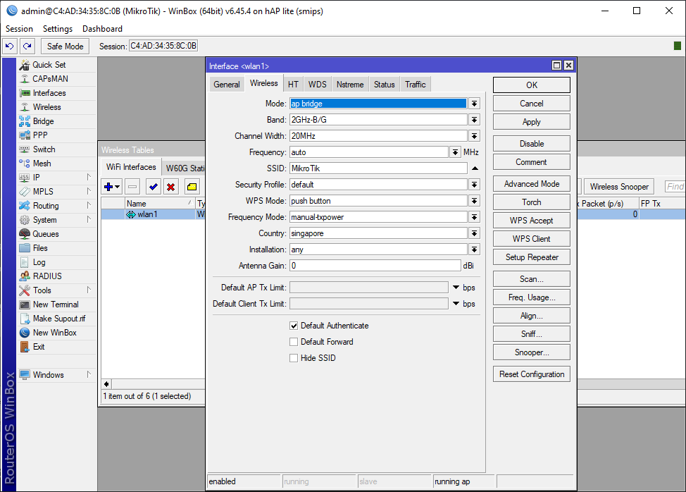
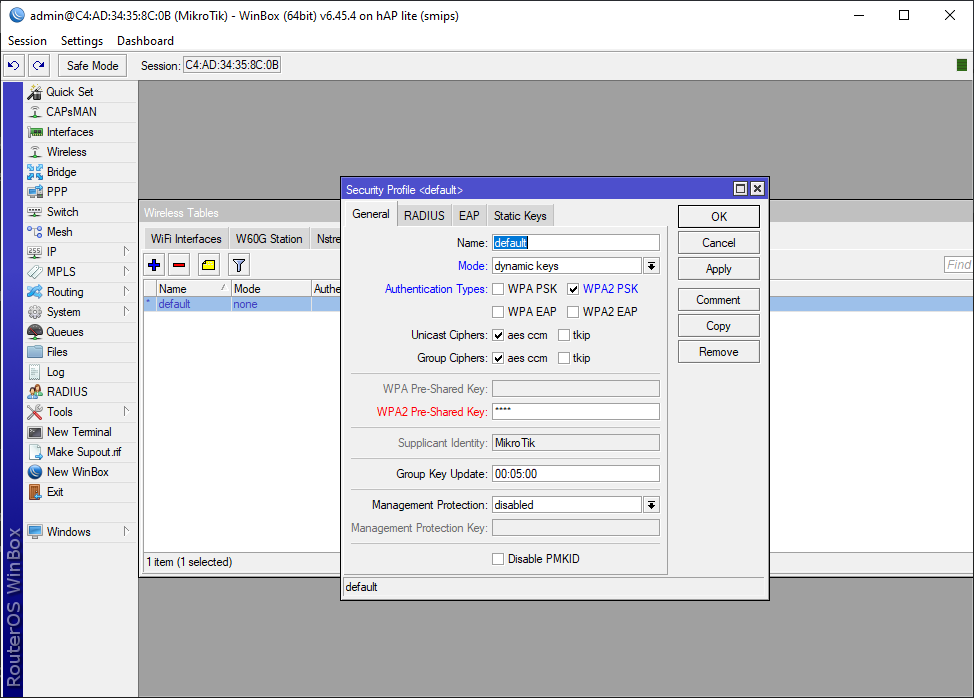
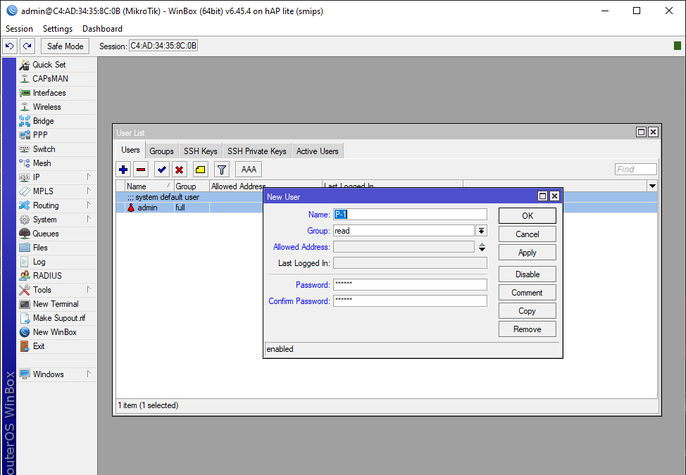

| How to configure a Mikrotik router (using WinBox)
- Connect the router with a Lan cable to the computer. (use the ports 2 to 5, do not use the first port since the firewall will block the configuration.
- Download WinBox from the official website → https://mikrotik.com/download
- Open the the app and hit the the Refresh on the neighbors section
- You should see the router down side the page
- Double click on the MAC Address tab, it should appear in the Connect To field
- The default Username(Login) is admin and leave the Password empty
- Hit the Connect button
- Now you should see the admin panel
- Click on Quick Set. New windows will show up.
- Change the Quick Set to Home AP.
- On the Internet section, change the Address Acquisition to Automatic. (It depends to your ISP but mostly it’s Automatic).
- On the Local Network section, se the IP Address to 192.168.5.1. To prevent confliction with your main router, do not put the IP Address like (192.168.0.1 or 192.168.1.1).
- Choose 255.255.255.0(/24) for the Netmask.
- Check the DHCP Server.
- Enter the range 192.168.5.10-192.168.5.254 in the DHCP Server Range. Also enable NAT. (The reason we are setting the range from 10 is that you may have other devices in the range of 0 to 9).
- Click Apply and then OK.
- On the left-side menu click on Wireless. You should see the wlan1.
- Double click on wlan1. You should see Interface tap show up.
- Go to the second tap which is Wireless and make sure that Mode is set to ap bridge.
- Put the Frequency on auto.
- You can set the SSID to anything you wish. (It’s the wireless name).
- Then click ok.
- On the Wireless section go to the Security Profiles.
- Double click on the default. You should see a window.
- Change the Mode to dynamic keys and check WPA2 PSK.
- Put the wireless password you wish into WPA2 Pre-Shared Key.
- Click Apply and then ok.
- On the left-side menu click on System and choose Reboot.
- On the left-side menu go to System and then select Password.
- If you haven’t put a password on your router, then just leave the Old Password empty.
- Enter your new password twice and click on Change, then restart the app. (re-open it).
- On the left-side menu go to System and then select Users.
- Click on the + sing on the top-left.
- Enter the name and select the permission you wish to give the user. (For more understanding go to the Groups section)
- Set the user password and click Ok.
- On the left-side menu go to System and then select Packages.
- You see some packages that are already installed. Fade ones are disabled.
- Click on Check For Updates (Make sure that your router is connected to the internet).
- If you click on Download, it will download the packages but won’t install them till you reboot it manually.
- If you click on Download and Install, it will download and install the packages by rebooting the router automatically.
- It may take a while till you can log in so be patient.
- On the left-side menu go to System and them select RouterBOARD.
- Click on Upgrade. After that go to System and Reboot.
- Give it a minute or so to reboot and log in back.
- Go to https://mikrotik.com/download and download the appropriate packages base on your router package type.
- On the left-side menu go to System and then select Packages.
- Just drag and drop any packages from the file you’ve already downloaded.
- Go to System and then Reboot the router in order to install the packages.
- Enter the IP we have already given to the router in browser which is 192.168.5.1.
- If you haven’t set the IP address, the default is 192.168.88.1.
- Log in and go to the WebFig tab or just follow along the quick set.




Setting up wireless

Security profiles

Rebooting the router
Now you can:
Use the first port and also if you connect your internet to your Mikrotik, You’ll have internet connection.
How to set a password
Managing users

Upgrading OS & Firmware
Upgrade the router board
Installing Packages
Configuring using web (WebFig)
- You can also configure the router using web interface.
- Source: YouTube
- Wrote: Don’t remember \(￣︶￣*\))
- Updated:
- Posted: November 26, 2022 | Azar 5, 1401